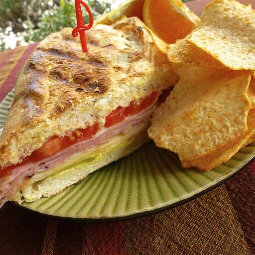

Classic Cuban Sandwich.

Description
One of famous sandwiches from Cuba, from a restaurant in Pinar del Rio. It is best served with fried plantain chips and a cold milkshake!
It takes a duration of about 25 minutes, 15 for preparation, and 10 for cooking.
Ingredients
- 4 sweet bread rolls.
- 1/2 cup mayonnaise.
- 1/4 cup prepared mustard.
- 1 pound thinly sliced cooked ham.
- 1 pound thinly sliced fully cooked pork.
- 1 pound sliced Swiss cheese.
- 1 cup dill pickle slices.
- 2 tablespoons butter, melted.
Steps
- Split the sandwich rolls in half, and spread mustard and mayonnaise liberally onto the cutsides.
On each sandwich, place and equal amount of Swiss cheese, ham and pork in exactly that order.
Place a few pickles onto the sandwich. Brush the tops with melted butter.
- Press each sandwich in a sandwich press heated to medium-high heat. If a sandwich press is not avaiable,
use a large skillet over medium-high heat, and press the sandwiches down using a sturdy plate or skillet.
Some indoor grills may be good for this also. Cook for 5 to 8 minutes, keeping sandwiches pressed.
If using a skillet, you may want to flip them once for even browning. Slice diagonally and serve hot.
Return to main page.